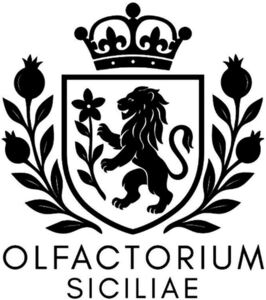

Trade Mark Journal No.2026/006 6 February 2026
WO0000001897859 (3,4)
Office of origin: European Union Intellectual Property Office (EUIPO)
Date of International Registration:26 November 2025
Date of designation in the UK:
26 November 2025

International priority date claimed: 30 July 2025
(European Union Intellectual Property Office (EUIPO))
(019225744)
- Class 3
- Perfumery; perfumes; fragrances; toilet water; oils for perfumes and fragrances; aromatic oils for perfumes; aromatic oils for fragrances; scented linen water; household fragrances; air fragrancing preparations; joss sticks; potpourris being fragrances; air fragrance reed diffusers; room fragrancing preparations; fragrance refills for non-electric room fragrance dispensers; dentifrices; body cream; lipsticks; cosmetic pencils; cosmetic preparations for baths; anti-wrinkle cream; antiperspirants being toiletries; bath oil; douching preparations for personal sanitary or deodorant purposes being toiletries; eyelid shadow; mascara; lip glosses; beauty masks; cosmetic hand creams; hair dyes; shaving gel; make-up removing lotions; leather and shoe cleaning and polishing preparations; creams for cellulite reduction; exfoliant creams; eye make-up; moisturising cosmetic creams, lotions and gels; lip cosmetics; massage gels, other than for medical purposes; sun creams; nail varnish; natural oils for cleaning purposes; non-medicated bath preparations for animals; perfumery, essential oils; cosmetic preparations for skin care; shampoos for pets being non-medicated grooming preparations; age spot reducing creams; non -medicated hair preparations and treatments for cosmetic purposes; cosmetic rouges; sun-tanning oils; shampoos; deodorants for animals; skin creams; non-medicated soaps; cosmetics for use on the skin; shaving preparations; make-up; hair balsam; shower and bath foam; cleaning preparations for household purposes; anti-aging creams; tissues impregnated with make-up removing preparations; after-sun lotions; shaving balm; vehicle cleaning preparations.
- Class 4
- Candles for absorbing smoke; perfumed candles; wicks for candles; candles containing insect repellent; candles.
CARLO OLIVERI
Representative: Praxi Intellectual Property SpA Firenze, Via Cristoforo Landino, 14, I-50129 Firenze, ITALY